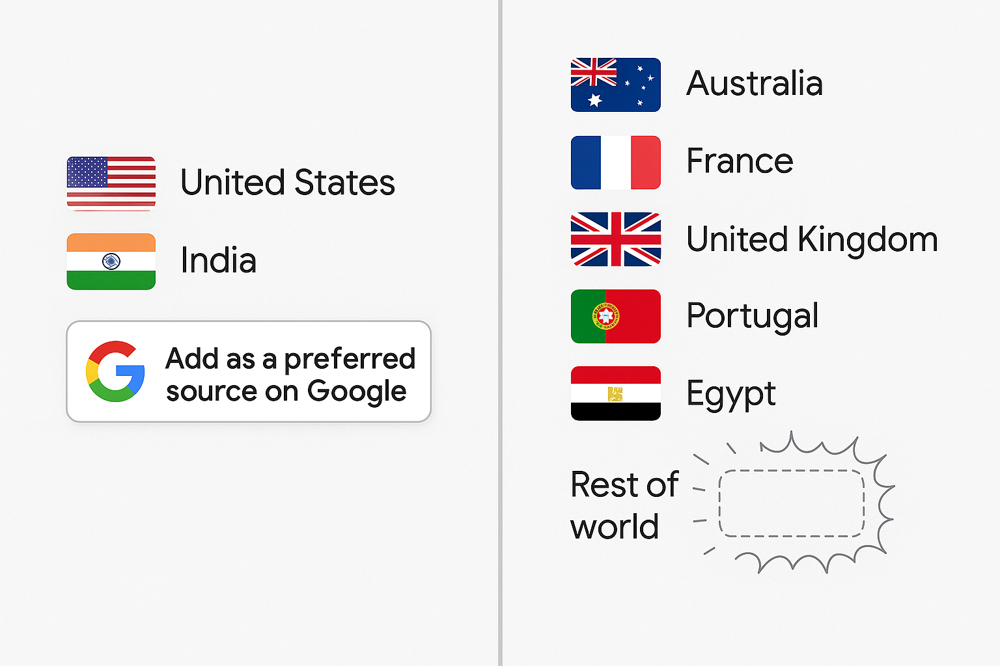

Google Preferred Sources Badge Generator
Want to stand out in Google Search? Preferred Sources Badges help readers see you as a trusted authority. More visibility, more clicks, more trust - all in seconds. Generate your badge today.
Want to stand out in Google Search? Preferred Sources Badges help readers see you as a trusted authority. More visibility, more clicks, more trust - all in seconds. Generate your badge today.
Google quietly soft-launched Preferred Sources in Search Labs in 2025, but now it's rolling out the feature widely across the US and India. With Preferred Sources, you can tell Google which websites you'd rather read. Once you've set your preferences, you'll notice more stories from those outlets showing up in Top Stories, especially when they've just published fresh and relevant content. You'll also get a dedicated From your sources section right on the results page, making it easier to spot articles from the sites you trust.
This is what it looks like. You can click on it to add my site as a Preferred Source, if you are in the US or India.
Getting into users' Preferred Sources can lead to more consistent and relevant traffic rather than random hits.

Since the feature is currently limited to English-speaking users in the US and India, it's advisable to display it only to visitors from these countries. You can do this (saw it from Coywolf by Jon Henshaw) using a geolocation service like Geo Targetly or using Cloudflare Workers.
Set up Google Tag Manager to trigger a custom GA4 event whenever someone clicks on your Preferred Source badge so that you can track badge clicks in GA4.
Track how the tool evolved over time. Toggle a version to see what changed.
Launched the tool.